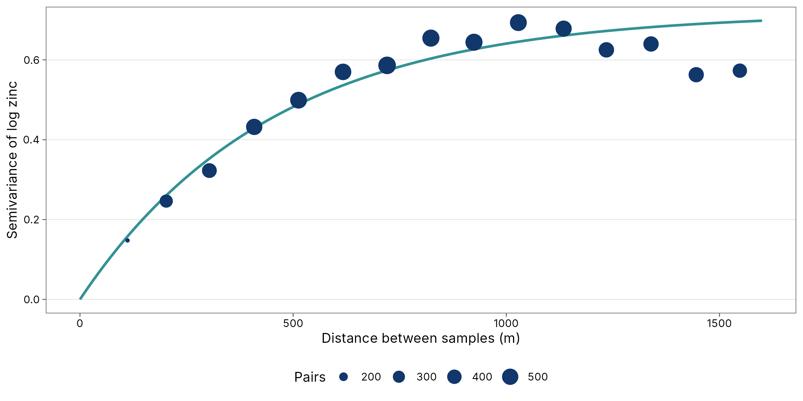
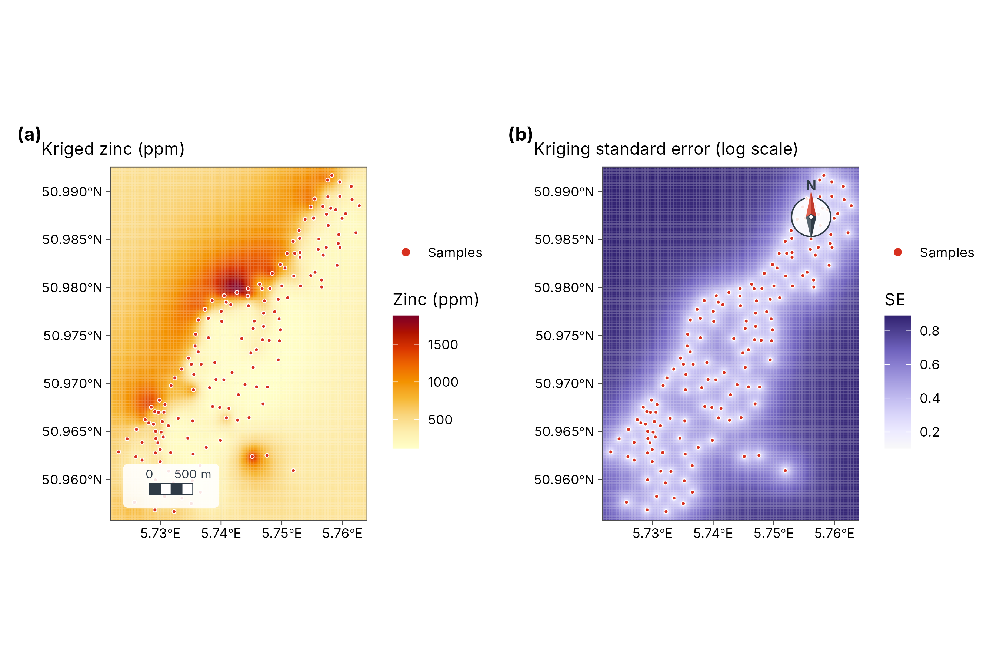
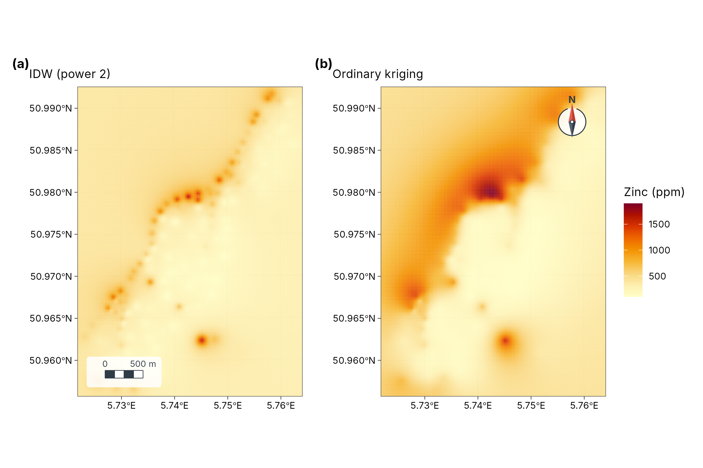

4. Interpolation: IDW and kriging
guide-04-interpolation.RmdThe concept
You measured something at a few places (soil zinc, rainfall, species richness) and want a map of the whole area. Spatial interpolation predicts the value at unsampled places from nearby samples. It is justified by spatial autocorrelation (Chapter 3): if nearby places are alike, nearby samples are informative.
| Method | Idea | Gives uncertainty? | When to use |
|---|---|---|---|
| Inverse-distance weighting (IDW) | Weighted average of samples, weights | No | Quick, dense samples, no time to model |
| Ordinary kriging | Weighted average with weights chosen from a model of spatial dependence (the variogram) to minimise prediction error | Yes: kriging variance | Default for scientific maps |
| Kriging with measurement error | Kriging that knows each sample is itself uncertain | Yes | Estimates (diversity, densities) rather than exact measurements |
library(tidymapr)
library(dplyr)
meuse <- terra::unwrap(readRDS(system.file("ex/meuse.rds", package = "terra")))
samples <- sf::st_as_sf(as.data.frame(meuse), coords = c("x", "y"), crs = 28992)
samples$log_zinc <- log(samples$zinc)
grid <- terra::rast(terra::ext(terra::vect(samples)) + 100, resolution = 25, crs = "EPSG:28992")The data are the 155 Meuse topsoil samples of Chapter 3. We interpolate log zinc and back-transform for maps.
1. The variogram: how similarity decays with distance
Theory
The semivariance between two samples is half their squared difference. Averaged over all pairs at a given distance :
Plotted against distance, it rises as samples become less alike and levels off. A fitted model describes the curve with three parameters:
| Parameter | Meaning | What it tells you |
|---|---|---|
| Nugget | Semivariance at distance zero | Measurement error and variation at scales shorter than the closest samples |
| Sill (nugget + partial sill) | The plateau | Total variance of the variable |
| Range | Distance where the plateau is reached (for the exponential model, about 3 × the range parameter) | How far a sample “sees”: beyond it, samples are uncorrelated |
kr <- geo_interpolate(samples, log_zinc, grid, method = "kriging")
vg <- attr(kr, "variogram")
vg
#> $model
#> [1] "Exp"
#>
#> $nugget
#> [1] 0
#>
#> $psill
#> [1] 0.7186599
#>
#> $range
#> [1] 449.7669
# Empirical semivariogram from all pairs, in 15 distance bins
xy <- sf::st_coordinates(samples)
d <- as.matrix(dist(xy))
g <- 0.5 * outer(samples$log_zinc, samples$log_zinc, "-")^2
pairs <- tibble(d = d[upper.tri(d)], g = g[upper.tri(g)]) |>
filter(d < 1600) |>
mutate(bin = cut(d, 15)) |>
summarise(distance = mean(d), gamma = mean(g), n = n(), .by = bin)
model <- tibble(distance = seq(0, 1600, 10)) |>
mutate(gamma = vg$nugget + vg$psill * (1 - exp(-distance / vg$range)))
ggplot2::ggplot(pairs, ggplot2::aes(distance, gamma)) +
ggplot2::geom_line(data = model, colour = "#349295", linewidth = 1) +
ggplot2::geom_point(ggplot2::aes(size = n), colour = "#11376B") +
ggplot2::labs(x = "Distance between samples (m)", y = "Semivariance of log zinc", size = "Pairs") +
theme_tidymapr()
Interpretation. The fitted exponential model has a nugget of 0, a partial sill of 0.72 and a range parameter of 450 m. In the exponential model, about two-thirds of the correlation between samples is lost within 450 m, and almost all of it by about 1300 m (the practical range). This matches the correlogram in Chapter 3, where Moran’s I fell sharply within the first few hundred metres. The points are the data; the line is the model kriging uses. A good fit at short distances matters most, because the nearest samples get the largest weights.
2. Kriging and its uncertainty
Theory
Ordinary kriging predicts the value at an unsampled place as a weighted average . The weights are chosen, from the variogram, to make the prediction unbiased () and to minimise the expected squared error: kriging is the best linear unbiased predictor (Matheron 1963; Cressie 1993). Two properties follow:
- Samples that are clustered together share their weight, so dense sampling in one corner does not dominate.
- The minimised error is the kriging variance: a map of how uncertain the prediction is at every place. It depends only on where the samples are, not on their values: it is small near samples and grows between and beyond them.
a <- geo_map(subtitle = "Kriged zinc (ppm)", north_arrow = FALSE) |>
map_raster(exp(kr[["prediction"]]), name = "Zinc (ppm)", palette = "YlOrRd") |>
map_points(samples, preset = "sample_site", label = "Samples", size = 0.9)
b <- geo_map(subtitle = "Kriging standard error (log scale)", scale_bar = FALSE) |>
map_raster(sqrt(kr[["variance"]]), name = "SE", palette = "Purples 3") |>
map_points(samples, preset = "sample_site", label = "Samples", size = 0.9)
geo_panels(a, b, ncol = 2, guides = "keep")
How to read the two maps together. The left map is the best estimate; the right map says where to trust it. Error is lowest along the river, where samples are dense, and highest in the corners and gaps. Never publish a kriged map without its error map, or at least mask areas far from samples.
3. Inverse-distance weighting
IDW uses weights , normalised to sum to one. The power (default 2) controls how local the surface is: a larger gives more weight to the nearest sample and a patchier map. IDW has no model, so it gives no uncertainty, and it always produces “bull’s-eyes” around samples because every sample’s own location takes its exact value.
idw <- geo_interpolate(samples, log_zinc, grid, method = "idw", power = 2)
c1 <- geo_map(subtitle = "IDW (power 2)", north_arrow = FALSE) |>
map_raster(exp(idw), name = "Zinc (ppm)", palette = "YlOrRd", limits = c(100, 1900))
c2 <- geo_map(subtitle = "Ordinary kriging", scale_bar = FALSE) |>
map_raster(exp(kr[["prediction"]]), name = "Zinc (ppm)", palette = "YlOrRd", limits = c(100, 1900))
geo_panels(c1, c2, ncol = 2, guides = "collect")
4. Which method is better? Cross-validation
The honest test of an interpolation is to predict samples it has not seen. In k-fold cross-validation, samples are split into k groups; each group is predicted from the others, and the errors are pooled.
set.seed(1)
fold <- sample(rep(1:5, length.out = nrow(samples)))
cv <- lapply(1:5, function(k) {
train <- samples[fold != k, ]
test <- samples[fold == k, ]
pk <- geo_interpolate(train, log_zinc, grid, method = "kriging")[["prediction"]]
pi <- geo_interpolate(train, log_zinc, grid, method = "idw")
tibble(
observed = test$log_zinc,
kriging = terra::extract(pk, terra::vect(test))[, 2],
idw = terra::extract(pi, terra::vect(test))[, 2]
)
}) |> bind_rows()
scores <- tibble(
method = c("Ordinary kriging", "IDW (power 2)"),
RMSE = c(sqrt(mean((cv$kriging - cv$observed)^2, na.rm = TRUE)),
sqrt(mean((cv$idw - cv$observed)^2, na.rm = TRUE))),
`Mean error (bias)` = c(mean(cv$kriging - cv$observed, na.rm = TRUE),
mean(cv$idw - cv$observed, na.rm = TRUE)),
R2 = c(cor(cv$kriging, cv$observed, use = "complete")^2,
cor(cv$idw, cv$observed, use = "complete")^2)
)
knitr::kable(scores, digits = 3, caption = "Five-fold cross-validation of log zinc predictions.")| method | RMSE | Mean error (bias) | R2 |
|---|---|---|---|
| Ordinary kriging | 0.399 | 0.005 | 0.693 |
| IDW (power 2) | 0.515 | 0.014 | 0.558 |
| Score | Meaning | Better when |
|---|---|---|
| RMSE (root mean squared error) | Typical size of a prediction error, in the units of the variable (here log ppm) | Smaller |
| Mean error | Average over- or under-prediction | Close to 0 |
| R2 (R²) | Share of the variation among samples the method reproduces | Closer to 1 |
Interpretation. Read the table, not the maps: the
method with the smaller RMSE predicts unseen samples better. Kriging
usually wins when the variogram is well defined, as here; IDW can match
it when samples are very dense. The GeoSpaX recipe
interpolate-samples runs the same comparison automatically
(see the Spatial analysis guide).
5. Kriging with measurement error
Ordinary kriging assumes each sample is exact. Many values are not: a species-richness estimate from a short survey, a density from a few traps, a mean of noisy readings. Each such value has its own standard error. Kriging with measurement error (Cressie 1993, section 3.2) adds each sample’s error variance to the diagonal of the kriging system, with three consequences:
- Poorly measured samples get less weight.
- The surface no longer passes exactly through every sample, so noise is smoothed out instead of mapped.
- The prediction variance includes the measurement error.
tidymapr uses this in geo_diversity_surface(), where
each site’s diversity is an estimate with a bootstrap standard error
from tidydiversity.
The case study Tree diversity across
Barro Colorado Island shows it from start to finish.
How to report it
Zinc concentrations were log-transformed and interpolated by ordinary kriging on a 25 m grid with tidymapr. An exponential variogram (nugget 0, partial sill 0.72, range parameter 450 m) was fitted to the empirical semivariogram. In five-fold cross-validation, kriging had an RMSE of 0.4 log units, against 0.51 for inverse-distance weighting. We show the kriging standard error alongside the prediction.